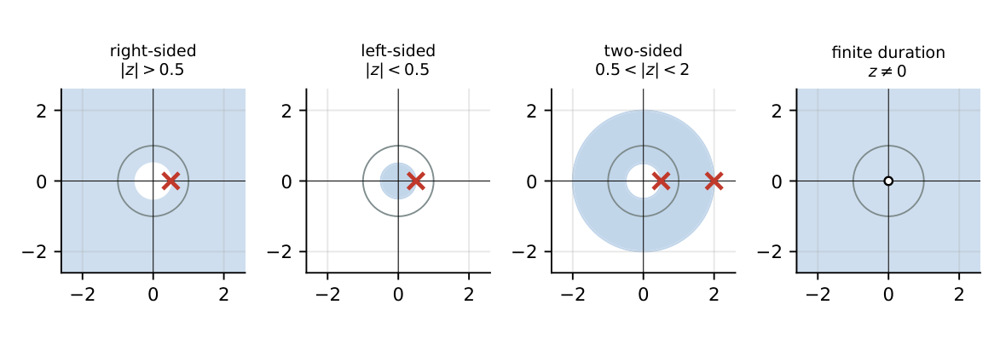

The \(z\)-Transform
In this chapter
Region of convergence, standard pairs, inverse by partial fractions/long division, initial- and final-value theorems, time shift and scaling. \(z\)-transform questions are among the most predictable 2-mark questions.
24.1 Motivation for the \(z\)-transform
The DTFT exists only for (absolutely) summable sequences. The \(z\)-transform generalises it to \(z=re^{j\Omega}\), so growing sequences (\(a^nu[n]\), \(|a|>1\)) have transforms, difference equations become algebraic, and pole locations reveal stability. The DTFT is \(X(z)\) evaluated on the unit circle, provided the circle is in the ROC.
24.2 Definition
Bilateral: \(X(z)=\displaystyle\sum_{n=-\infty}^{\infty}x[n]z^{-n}\). Unilateral: \(X(z)=\displaystyle\sum_{n=0}^{\infty}x[n]z^{-n}\).
\(X(e^{j\Omega})=X(z)|_{z=e^{j\Omega}}\).
24.3 Bilateral and unilateral \(z\)-transforms
The unilateral transform is used for causal sequences and difference equations with initial conditions: \(x[n-1]\to z^{-1}X(z)+x[-1]\), \(x[n+1]\to zX(z)-zx[0]\). The bilateral transform requires the ROC to identify the sequence.
24.4 Region of convergence
The ROC is the set of \(z\) for which \(\sum|x[n]||z|^{-n}<\infty\): always an annulus (a ring) centred at the origin, containing no poles.

| Sequence | ROC |
|---|---|
| Finite duration | entire plane, except \(z=0\) (if \(x[n]\ne0\) for some \(n>0\)) and/or \(z=\infty\) (if \(x[n]\ne0\) for some \(n<0\)) |
| Right-sided (causal) | \(|z|>r_{max}\) (the outermost pole); includes \(z=\infty\) if causal |
| Left-sided | \(|z|<r_{min}\) (the innermost pole) |
| Two-sided | \(r_1<|z|<r_2\) |
| Stable | contains the unit circle \(|z|=1\) |
24.5 Standard pairs
1.55
| \(x[n]\) | \(X(z)\) | ROC |
|---|---|---|
| \(\delta[n]\) | \(1\) | all \(z\) |
| \(\delta[n-k]\) | \(z^{-k}\) | \(z\ne0\) (\(k>0\)) |
| \(u[n]\) | \(\dfrac1{1-z^{-1}}=\dfrac z{z-1}\) | \(|z|>1\) |
| \(-u[-n-1]\) | \(\dfrac1{1-z^{-1}}\) | \(|z|<1\) |
| \(a^nu[n]\) | \(\dfrac1{1-az^{-1}}=\dfrac z{z-a}\) | \(|z|>|a|\) |
| \(-a^nu[-n-1]\) | \(\dfrac1{1-az^{-1}}\) | \(|z|<|a|\) |
| \(n\,a^nu[n]\) | \(\dfrac{az^{-1}}{(1-az^{-1})^2}\) | \(|z|>|a|\) |
| \(n\,u[n]\) | \(\dfrac{z^{-1}}{(1-z^{-1})^2}\) | \(|z|>1\) |
| \(\cos\Omega_0n\,u[n]\) | \(\dfrac{1-z^{-1}\cos\Omega_0}{1-2z^{-1}\cos\Omega_0+z^{-2}}\) | \(|z|>1\) |
| \(\sin\Omega_0n\,u[n]\) | \(\dfrac{z^{-1}\sin\Omega_0}{1-2z^{-1}\cos\Omega_0+z^{-2}}\) | \(|z|>1\) |
| \(a^n\cos\Omega_0n\,u[n]\) | \(\dfrac{1-az^{-1}\cos\Omega_0}{1-2az^{-1}\cos\Omega_0+a^2z^{-2}}\) | \(|z|>|a|\) |
| \(a^n\sin\Omega_0n\,u[n]\) | \(\dfrac{az^{-1}\sin\Omega_0}{1-2az^{-1}\cos\Omega_0+a^2z^{-2}}\) | \(|z|>|a|\) |
\(a^nu[n]\) and \(-a^nu[-n-1]\) have the same \(X(z)\) and differ only in the ROC. Without the ROC, \(X(z)\) does not determine the sequence.
24.6 Properties
1.4
| Property | Time | \(z\)-domain (ROC) |
|---|---|---|
| Linearity | \(ax+by\) | \(aX+bY\) (contains \(R_x\cap R_y\)) |
| Time shift | \(x[n-n_0]\) | \(z^{-n_0}X(z)\) |
| Scaling in \(z\) | \(a^nx[n]\) | \(X(z/a)\) (\(|a|R\)) |
| Time reversal | \(x[-n]\) | \(X(z^{-1})\) (\(1/R\)) |
| Conjugation | \(x^*[n]\) | \(X^*(z^*)\) |
| Differentiation | \(n\,x[n]\) | \(-z\,dX/dz\) |
| Convolution | \(x*y\) | \(X(z)Y(z)\) |
| Accumulation | \(\sum_{k\le n}x[k]\) | \(\dfrac{X(z)}{1-z^{-1}}\) |
| Expansion | \(x[n/L]\) | \(X(z^L)\) |
24.7 Time shifting, scaling, convolution
\(u[n-2]\to\dfrac{z^{-2}}{1-z^{-1}}\). \(x=\{1,2,3\}\) (\(n=0,1,2\)): \(X=1+2z^{-1}+3z^{-2}\), ROC all \(z\ne0\). \((0.5)^n\cos(\pi n/3)u[n]\): use scaling of the cosine pair. \(\{1,1\}*\{1,1\}=\{1,2,1\}\) corresponds to \((1+z^{-1})^2\).
24.8 Initial-value theorem
For a causal \(x[n]\): \(x[0]=\displaystyle\lim_{z\to\infty}X(z)\).
24.9 Final-value theorem
\(x[\infty]=\displaystyle\lim_{z\to1}(1-z^{-1})X(z)\), valid if all poles of \((1-z^{-1})X(z)\) lie strictly inside the unit circle.
\(X=\dfrac1{1-0.5z^{-1}}\): \(x[0]=1\); \(x[\infty]=\lim_{z\to1}\dfrac{1-z^{-1}}{1-0.5z^{-1}}=0\). For \(u[n]\): \(\dfrac{(1-z^{-1})}{(1-z^{-1})}=1\), \(x[\infty]=1\).
24.10 Inverse \(z\)-transform
- Partial fractions in \(z^{-1}\) (expand \(X(z)/z\) if written in \(z\)), then use the table and the ROC to pick right- or left-sided terms.
- Power series (long division): expand in \(z^{-1}\) for right-sided, in \(z\) for left-sided; coefficients are the samples.
- Residues: \(x[n]=\frac1{2\pi j}\oint X(z)z^{n-1}dz\).
\(X=\dfrac1{(1-0.5z^{-1})(1-0.25z^{-1})}\), \(|z|>0.5\): \(A=\dfrac1{1-0.25/0.5}=2\), \(B=\dfrac1{1-0.5/0.25}=-1\); \(x[n]=\big[2(0.5)^n-(0.25)^n\big]u[n]\). Check by series: \(x[0]=1\), \(x[1]=0.75\).
\(X=\dfrac1{(1-0.5z^{-1})(1-2z^{-1})}=\dfrac{-1/3}{1-0.5z^{-1}}+\dfrac{4/3}{1-2z^{-1}}\).
ROC \(0.5<|z|<2\): \(x[n]=-\tfrac13(0.5)^nu[n]-\tfrac43(2)^nu[-n-1]\) (stable, two-sided).
ROC \(|z|>2\): \(x[n]=\big[-\tfrac13(0.5)^n+\tfrac43\,2^n\big]u[n]\) (causal, unstable). ROC \(|z|<0.5\): left-sided.
\(X=\dfrac1{1-0.5z^{-1}}\), \(|z|>0.5\): \(1+0.5z^{-1}+0.25z^{-2}+\cdots\Rightarrow x[n]=(0.5)^nu[n]\).
Q1. The ROC of \(\mathcal Z\{u[n]\}\) is (A) \(|z|<1\) (B) \(|z|>1\) (C) all \(z\) (D) \(|z|=1\).
Q2. A causal sequence has ROC that (A) is inside the innermost pole (B) is outside the outermost pole and includes \(\infty\) (C) is an annulus (D) excludes \(\infty\).
Q3. \(\mathcal Z\{\delta[n-3]\}=\) (A) \(z^3\) (B) \(z^{-3}\) (C) \(1\) (D) \(3z\).
Answers: Q1 (B). Q2 (B). Q3 (B).
Q4. \(X(z)=\dfrac1{(1-0.5z^{-1})(1-0.25z^{-1})}\), \(|z|>0.5\). Then \(x[1]\) is (A) \(0.25\) (B) \(0.5\) (C) \(0.75\) (D) \(1\).
Q5. \(x[n]=(0.5)^nu[n]+(2)^nu[-n-1]\) has ROC (A) \(|z|>0.5\) (B) \(|z|<2\) (C) \(0.5<|z|<2\) (D) empty.
Answers: Q4 (C): \(0.5+0.25\). Q5 (C): right-sided part \(|z|>0.5\), left-sided part \(|z|<2\).
Q6. For \(X(z)=\dfrac{1}{1-0.5z^{-1}}\), causal, \(x[3]=\) (three decimals).
Q7. \(\mathcal Z\{a^nu[n]\}\) with \(a=0.5\) evaluated at \(z=1\) is .
Answers: Q6: \(0.5^3=0.125\). Q7: \(1/(1-0.5)=2\).
Q8. True: (A) ROC contains no poles. (B) Left-sided sequences have ROC inside a circle. (C) Stable sequences have unit circle in ROC. (D) ROC is always a half-plane.
Answers: Q8: (A), (B), (C).
(i) Ignoring the ROC when inverting. (ii) \(a^nu[n]\) vs \(-a^nu[-n-1]\). (iii) Applying FVT with poles on or outside the unit circle. (iv) Writing \(X(z)\) in \(z\) vs \(z^{-1}\) before partial fractions (expand \(X/z\) if in positive powers). (v) \(X(z/a)\) for \(a^nx[n]\), not \(X(az)\).
T1. Find \(\mathcal Z\{(0.5)^nu[n-1]\}\). T2. \(X=\dfrac{z}{z-0.5}\), \(|z|>0.5\): \(x[n]\)?
Answers: T1: \(\dfrac{0.5z^{-1}}{1-0.5z^{-1}}\). T2: \(\dfrac{1}{1-0.5z^{-1}}\): \(x=(0.5)^nu[n]\).
- \(X=\sum x[n]z^{-n}\). Right-sided: outside; left-sided: inside; two-sided: annulus. No poles in ROC.
- \(a^nu\leftrightarrow\frac1{1-az^{-1}}\), \(|z|>|a|\). Shift \(z^{-n_0}\); scaling \(X(z/a)\); \(nx\to-zX'\).
- IVT \(x[0]=X(\infty)\); FVT \(\lim(1-z^{-1})X\); poles inside unit circle.
- Inverse: partial fractions + ROC; long division.